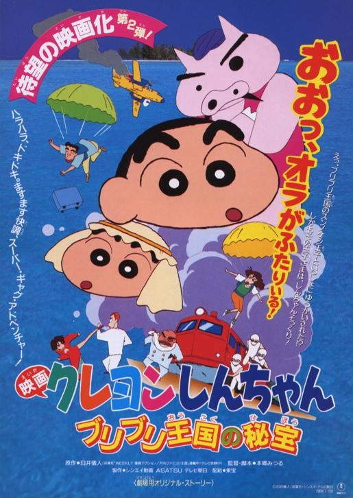
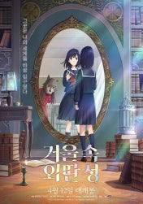
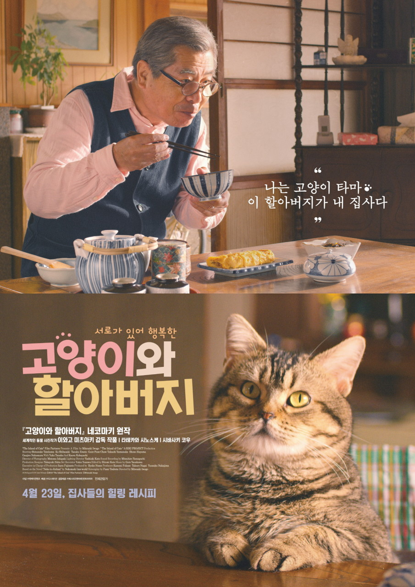

-
Title 크레용 신짱: 부리부리 왕국의 숨겨진 보물 Release 1994.00.00 Runtime 87분 Age Rating 전체 관람가 Director 혼고 미츠루 Cast 야지마 아키코, 나라하시 미키, 후지와라 케이지 
어느 날, 부리부리 왕국의 왕자 슨노케시는 이상한 자들에게 납치당한다. 신 짱과 엄마 미사에는 제비뽑기를 하다 부리부리 왕국 여행권에 당첨된다. 그러나, 비행기에서 '화이트 스네이크' 라는 조직은 신 짱을 노리고 있었으며, 무사히 탈출했으나, 기차에서 또다시 출몰, 신 짱은 잡혀 버린다. 부리부리 왕국의 보물이 있는 지하 궁전의 열쇠가 바로 슨노케시 왕자와 신 짱! 화이트 스네이크 단의 두목 '아나콘다 백작' 과 부하 '미스터 하브'와 간부 호모들은, 열쇠인 두 아이를 가지고 지하 궁전으로 보물을 차지하고 세상을 지배하기 위해 출발한다. 부리부리 왕궁에서 파견된 왕자를 찾는 조직원 루루 루 루루와 노하라 일가는, 슨노케시와 신 짱을 구출하기 위해 화이트 스네이크 단을 쫓아 지하 궁전으로 떠난다.Date Time Theater Screen -
Title 우리는 형제입니다 Release 2014.10.23 Runtime 102분 Age Rating 12세 이상 관람가 Director 장진 Cast 조진웅, 김성균, 김영애, 윤진이 어린 시절 고아원에서 생이별한 후 30년 만에 극적 상봉에 성공한 상연과 하연 형제! 하지만 막상 만나고 보니… 정말 한 핏줄 맞아?! 게다가 30년 만에 만났다는 기쁨도 잠시, 30분 만에 엄마가 감쪽같이 사라져버렸다! 엄마를 봤다는 제보를 쫓아 두 형제, 방방곡곡 전국 원정을 시작한다! 말투도, 스타일도, 직업도! 달라도 너~무 다른 이 형제! 과연 사라진 엄마도 찾고, 잃어버린 형제애도 찾을 수 있을까?Date Time Theater Screen -
Title 거울 속 외딴 성 Release 2023.04.12 Runtime 116분 Age Rating 12세 이상 관람가 Director 하라 케이이치 Cast 토우마 아미, 아시다 마나, 키타무라 타쿠미 
학교에서도 집에서도 마음 둘 곳 없이 외로운 시간을 보내던 ‘코코로’. 어느 날, 방 안의 거울이 갑자기 빛나기 시작하고, ‘코코로’는 홀린 듯 거울 속으로 빨려 들어가게 되는데… 거울 속 세상은 바다 위에 떠있는 신비로운 성이었고, 그곳에서 처음 보는 여섯 명의 친구들과 늑대 가면을 쓴 정체불명의 소녀 ‘늑대님’을 만나게 된다. “성에 숨겨진 열쇠를 찾으면, 원하는 소원을 한 가지 들어주지” 열쇠를 찾으며 조금씩 가까워진 ‘코코로’와 친구들은 뭔가 수상한 점을 하나씩 발견하게 되는데… 모든 수수께끼가 풀리는 순간 상상을 초월하는 기적이 펼쳐진다!Date Time Theater Screen -
Title 고양이와 할아버지 Release 2020.04.23 Runtime 103분 Age Rating 전체 관람가 Director 이와고 미츠아키 Cast 타테카와 시노스케 
할머니, 할아버지, 그리고 고양이의 섬에서 6살 고양이 타마와 단둘이 사는 다이키치 할아버지(타테카와 시노스케). 어느 날, 죽은 아내가 남긴 미완성 레시피 노트를 발견한다. 이웃들과 함께 이 섬의 하나뿐인 카페 주인 ‘미치코’(시바사키 코우)에게 새로운 음식을 배우며 자신만의 레시피로 비어있는 페이지를 채워나가는데… 한 사람과 한 마리가 선택한 행복, 언제까지나 함께할 수 있을까?Date Time Theater Screen -
Title 도그데이즈 Release 2024.02.07 Runtime 120분 Age Rating 12세 이상 관람가 Director 김덕민 Cast 윤여정, 유해진, 김윤진, 정성화, 김서형, 다니엘 헤니, 이현우, 탕준상, 윤채나  깔끔한 성격의 계획형 싱글남 ‘민상’(유해진). 영끌까지 모아 산 건물을 개똥밭으로 만드는 세입자 수의사 ‘진영’(김서형) 때문에 매일 머리가 아프다. 오늘도 ‘진영’과 티격태격하던 ‘민상’은 동물병원에서 한 성격하는 할머니를 만나는데, 다름 아닌 세계적 건축가 ‘민서’(윤여정)! 진행 중인 프로젝트를 위해 ‘민서’의 도움이 절실한 ‘민상’은 ‘민서’에게 잘 보이기 위해 ‘진영’과 그녀의 반려견 ‘차장님’을 공략하기 시작한다. 갑자기 길에서 쓰러지게 되며 유일한 가족인 반려견 ‘완다’를 잃어 버리고만 ‘민서’. 동네에 살고 있는 케이팝 작곡가 ‘선용’(정성화)과 ‘정아’(김윤진) 가족이 완다를 보살피고 있다는 사실을 모르는 ‘민서’는 자신을 구해준 MZ 배달 라이더 ‘진우’(탕준상)와 함께 완다를 찾아 나선다. 한편 ‘선용’의 후배인 밴드 리더 ‘현’(이현우)은 자리를 비운 여친의 반려견 ‘스팅’을 돌보던 중 스팅의 대디를 자청하며 나타난 여친의 전남친 ‘다니엘’(다니엘 헤니)의 등장에 기가 막힐 따름인데…! 특별한 단짝 덕분에 엮이게 된 이들의 기분 좋은 갓생 스토리가 시작된다!
깔끔한 성격의 계획형 싱글남 ‘민상’(유해진). 영끌까지 모아 산 건물을 개똥밭으로 만드는 세입자 수의사 ‘진영’(김서형) 때문에 매일 머리가 아프다. 오늘도 ‘진영’과 티격태격하던 ‘민상’은 동물병원에서 한 성격하는 할머니를 만나는데, 다름 아닌 세계적 건축가 ‘민서’(윤여정)! 진행 중인 프로젝트를 위해 ‘민서’의 도움이 절실한 ‘민상’은 ‘민서’에게 잘 보이기 위해 ‘진영’과 그녀의 반려견 ‘차장님’을 공략하기 시작한다. 갑자기 길에서 쓰러지게 되며 유일한 가족인 반려견 ‘완다’를 잃어 버리고만 ‘민서’. 동네에 살고 있는 케이팝 작곡가 ‘선용’(정성화)과 ‘정아’(김윤진) 가족이 완다를 보살피고 있다는 사실을 모르는 ‘민서’는 자신을 구해준 MZ 배달 라이더 ‘진우’(탕준상)와 함께 완다를 찾아 나선다. 한편 ‘선용’의 후배인 밴드 리더 ‘현’(이현우)은 자리를 비운 여친의 반려견 ‘스팅’을 돌보던 중 스팅의 대디를 자청하며 나타난 여친의 전남친 ‘다니엘’(다니엘 헤니)의 등장에 기가 막힐 따름인데…! 특별한 단짝 덕분에 엮이게 된 이들의 기분 좋은 갓생 스토리가 시작된다!Date 2024.01.24 Time 19:00 ~ 21:10 Theater CGV (용산아이파크몰) Screen 4관